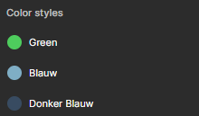
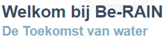
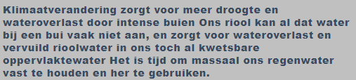

Kleuren
Wel doen
Groen wordt voor koppen gebruikt die interactieve doeleinden hebben zoals contact formulieren ook wordt deze gebruikt voor teksten bij interactieve formulieren of belangrijke kopjes waarmee je de gebruiker tot een actie wilt aansporen. Blauw wordt gebruikt voor subkoppen (h3) maar ook voor knoppen die minder hoeven opvallen zoals "lees verder". Donkerblauw wordt gebruikt voor grote koppen H2 waarbij niet perse een interactie bij is vereist of die niet tot actie aanroepen.
Niet doen
Niet de koppen structuur van de kleuren omdraaien dit zorgt voor verwarring
"Alle kleuren in de root"
root{
--blue: #7FAEC5;
--darkblue: #384B61;
--green: #4ECD5D;
}
"hoe je een kleur toepast"
color: var(--naam van kleur);
Logo
Wel doen
Het logo van spatwater wordt subtiel verwerkt in de website het liefst in de footer en
zo klein mogelijk omdat spat water wilt dat er gezien wordt dat be-rain van hun is. Be-rain heeft zelf
geen logo daar wordt tekst voor gebruikt.
Niet doen
Niet het logo te groot maken en te vaak laten terug komen max 1x per pagina.
<img src="assets/images/logo_spatwater.png" alt="logo spatwater"/>
Fonts
 
Voor de body tekst van b-RAIN hebben wij gekozen voor:
font-family: 'Open Sans', sans-serif;
font-size: 1em;
line-height: 1.5em;
Uiteraard hebben de verschillende H elementen een andere grote:
H1 font-size: 3em; font-weight: 800;
H2 font-size: 2.3em; font-weight: 600;
H3 font-size: 1.8em; font-weight: 600;
H4 font-size: 1.4em; font-weight: 500;
De P elementen hebben de volgende instelling:
P font-size: 1em; font-weight: 400;
De A elementen hebben de volgende instelling:
P font-weight: 500; font-size: 1.1em;
Niet doen
h1 {
font-size: 3em;
font-weight: 800;
margin: 0px;
}
h2 {
display: block;
font-size: 1.5em;
margin-block-start: 0.83em;
margin-block-end: 0.83em;
margin-inline-start: 0px;
margin-inline-end: 0px;
font-weight: bold;
}
h3 {
display: block;
font-size: 1.17em;
margin-block-start: 1em;
margin-block-end: 1em;
margin-inline-start: 0px;
margin-inline-end: 0px;
font-weight: bold;
}
p {
font-size: 1em;
font-weight: 400;
margin: 0px;
}
Icons
Wel doen
Icons Icons versterken de inhoud van de tekst, omdat ze snel en visueel informatie kunnen overbrengen. - Visuele aantrekkingskracht: Iconen kunnen de visuele aantrekkingskracht van een tekst vergroten. Ze trekken de aandacht van de lezer en maken de tekst meer uitnodigend. - Snelle herkenning: Iconen bieden de mogelijkheid om informatie snel te herkennen en te begrijpen. Een goed gekozen icoon kan de boodschap van de tekst in één oogopslag communiceren. - Universele communicatie: Veel iconen hebben wereldwijd erkende betekenissen, waardoor ze een vorm van universele communicatie worden. Dit helpt bij het overbruggen van taalbarrières en maakt informatie toegankelijker voor een breder publiek. Dit past goed bij toegankelijkheid Bij het gebruik van iconen is het echter belangrijk om consistent te zijn en ervoor te zorgen dat de betekenis ervan duidelijk is voor de doelgroep. Te veel of onduidelijke iconen kunnen de leesbaarheid verminderen in plaats van versterken.
<class="fas fa-phone">
.fa, .fab, .fad, .fal, .far, .fas {
-moz-osx-font-smoothing: grayscale;
-webkit-font-smoothing: antialiased;
display: inline-block;
font-style: normal;
font-variant: normal;
text-rendering: auto;
line-height: 1;
}